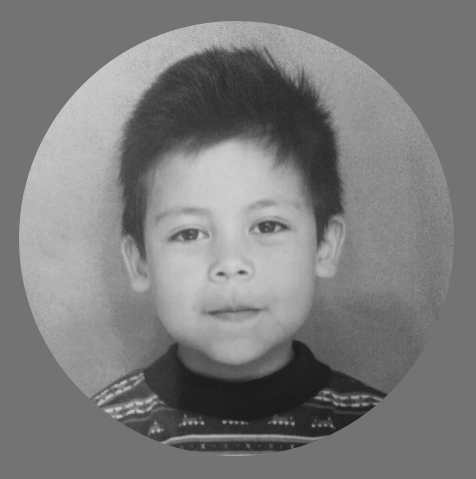

Descripción Personal
Soy ingeniero civil de Noveno semestre de la universidad agraria de Colombia, me motivan las experiencias
nuevas y el aprendizaje a adquirir con cada una de las oportunidades que se presenten, el conocimiento y el
deber con mi familia y país es mi mayor ambición, por ello me esfuerzo en cada labor que he de ejercer en mi
vida, lo que me ha llevado a fortalecer mi formación como persona; siempre dispuesto a ayudar y socializar
profesionalmente con mi entorno.
Educación
-
INGENIERÍA CIVIL
Noveno Semestre - Universidad Agraria de Colombia (profesional)
-
CURSOS VIRTUALES
Autocad 2d - Costos y presupuestos para edificaciones i: generalidades - Cso de Excel y Access para el desarrollo de aplicaciones administrativas empresariales - Aplicacion del reglamento tecnico para redes internas de telecomunicaciones
-
PRE-PRENSA DIGITAL
Concluido - Sena//Fumdir (técnico) - Diciembre 2011
-
BACHILLER
Concluido - Colegio Aníbal Fernández de Soto - Bachillerato Académico 2011
Experiencias Laborales
ACT Telematica
- Lider De Proyecto
ACT Telematica
- Asistente De Proyecto
Ciatel Consorcio M.
- Aforador
Skills
Creatividad
Actitud Positiva
Confianza
Honestidad
Resultados, cifras y reconocimientos
Foto

Hobies
-
Dibujar

-
Modelar en 3D

-
Montar en Bici

-
Videojuegos

Expectativas Y El ¿PorQue? De Esta Carrera
la programación para mi es algo muy llamativo y un reto personal que he tengo en mente desde hace mucho timepo, anelho mucho llenarme de conocimientos en cuanto
a conceptos de computación "si asi se le puede llamar" y cada fragmento que pueda adquirir me enriquese emocionalmente, las expectativas que tengo son basicamente
un manejo al derecho y al revez de manejo de programacion html y esto a su vez me abrira a mil oportunidades y nuevas nociones de la tecnologia, de antemano me
agradesco mucho que este programa de Henry exista, ya que me da una oportunidad sin pre requisitos :).